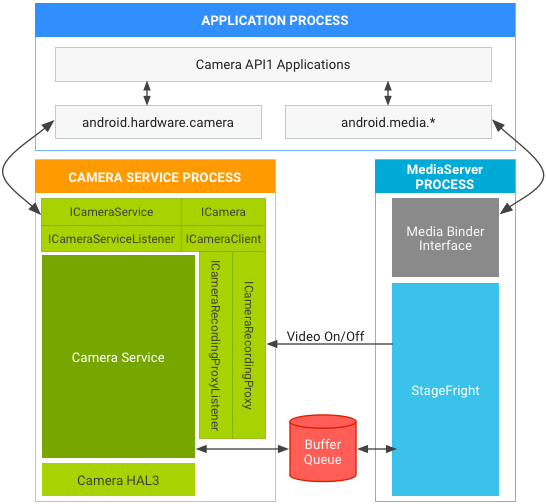
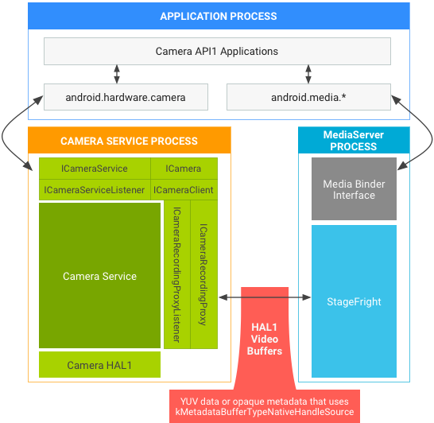
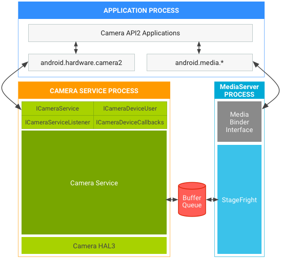

In this document
This page details version differences in Camera HALs, APIs, and associated Android Compatibility Test Suite (CTS) tests. It also covers several architectural changes made to harden and secure the camera framework in Android 7.0 and the updates vendors must make to support these changes in their camera implementations.
Terminology
The following terms are used on this page:
- Camera API1
- The app-level camera framework on Android 4.4 and earlier devices, exposed
through the
android.hardware.Cameraclass. - Camera API2
- The app-level camera framework on Android 5.0 and later devices, exposed
through the
android.hardware.camera2package. - Camera HAL
- The camera module layer implemented by SoC vendors. The app-level public frameworks are built on top of the camera HAL.
- Camera HAL3.1
- Version of the camera device HAL released with Android 4.4.
- Camera HAL3.2
- Version of the camera device HAL released with Android 5.0.
- Camera API1 CTS
- Set of camera Compatibility Test Suite (CTS) tests that run on top of Camera API1.
- Camera API2 CTS
- Additional set of camera CTS tests that run on top of Camera API2.
Camera APIs
Android includes the following camera APIs.
Camera API1
Android 5.0 deprecated Camera API1, which continues to be phased out as new platform development focuses on Camera API2. However, the phase-out period will be lengthy, and Android releases will continue to support Camera API1 apps for some time. Specifically, support continues for:
- Camera API1 interfaces for apps. Camera apps built on top of Camera API1 should work as they do on devices running earlier Android release versions.
- Camera HAL versions. Includes support for Camera HAL1.0.
Camera API2
The Camera API2 framework exposes lower-level camera control to the app, including efficient zero-copy burst/streaming flows and per-frame controls of exposure, gain, white balance gains, color conversion, denoising, sharpening, and more. For details, watch the Google I/O video overview.
Android 5.0 and later includes Camera API2; however, devices running Android
5.0 and later may not support all Camera API2 features. The
android.info.supportedHardwareLevel property that apps can query
through the Camera API2 interfaces reports one of the following support
levels:
LEGACY. These devices expose capabilities to apps through the Camera API2 interfaces that are approximately the same capabilities as those exposed to apps through the Camera API1 interfaces. The legacy frameworks code conceptually translates Camera API2 calls into Camera API1 calls; legacy devices do not support Camera API2 features such as per-frame controls.FULL. These devices support all of major capabilities of Camera API2 and must use Camera HAL 3.2 or later and Android 5.0 or later.LIMITED. These devices support some Camera API2 capabilities (but not all) and must use Camera HAL 3.2 or later.
Individual capabilities are exposed via the
android.request.availableCapabilities property in the Camera API2
interfaces. FULL devices require the MANUAL_SENSOR and
MANUAL_POST_PROCESSING capabilities, among others. The
RAW capability is optional even for FULL devices.
LIMITED devices can advertise any subset of these capabilities,
including none of them. However, the BACKWARD_COMPATIBLE capability
must always be defined.
The supported hardware level of the device, as well as the specific Camera API2 capabilities it supports, are available as the following feature flags to allow Google Play filtering of Camera API2 camera apps.
android.hardware.camera.hardware_level.fullandroid.hardware.camera.capability.rawandroid.hardware.camera.capability.manual_sensorandroid.hardware.camera.capability.manual_post_processing
CTS requirements
Devices running Android 5.0 and later must pass the Camera API1 CTS, Camera API2 CTS, and CTS Verifier camera tests.
Devices that do not feature a Camera HAL3.2 implementation and are not
capable of supporting the full Camera API2 interfaces must still pass the Camera
API2 CTS tests. However, the device will be running in Camera API2
LEGACY mode (in which the Camera API2 calls are conceptually mapped
to Camera API1 calls) so any Camera API2 CTS tests related to features or
capabilities beyond Camera API1 will be automatically skipped.
On legacy devices, Camera API2 CTS tests that are not skipped use the existing public Camera API1 interfaces and capabilities with no new requirements. Bugs that are exposed (and which cause a Camera API2 CTS failure) are bugs already present in the device’s existing Camera HAL, and thus would be found by existing Camera API1 apps. We do not expect many bugs of this nature (however, any such bugs must be fixed to pass the Camera API2 CTS tests).
Camera framework hardening
To harden media and camera framework security, Android 7.0 moves camera service out of mediaserver. Vendors may need to make changes in the camera HAL depending on the API and HAL versions in use. The following sections detail architectural changes in AP1 and AP2 for HAL1 and HAL3, as well as general requirements.
Architectural changes for API1
API1 video recording may assume camera and video encoder live in the same process. When using API1 on:
- HAL3, where camera service uses BufferQueue to pass buffers between
processes, no vendor update is necessary.

Figure 1.Android 7.0 camera and media stack in API1 on HAL3.
- HAL1, which supports passing metadata in video buffers, vendors must
update the HAL to use kMetadataBufferTypeNativeHandleSource.
(
kMetadataBufferTypeCameraSourceis no longer supported in Android 7.0.)
Figure 2.Android 7.0 camera and media stack in API1 on HAL1.
Architectural changes for API2
For API2 on HAL1 or HAL3, BufferQueue passes buffers so those paths continue to work. The Android 7.0 architecture for API2 on:
- HAL1 is not affected by the cameraservice move, and no vendor update is necessary.
- HAL3 is affected, but no vendor update is
necessary:

Figure 3.Android 7.0 camera and media stack in API2 on HAL3.
Additional requirements
The architectural changes made for hardening media and camera framework security include the following additional device requirements.
- General. Devices require additional bandwidth due to IPC,
which may affect time-sensitive camera use cases such as high-speed video
recording. Vendors can measure actual impact by running
android.hardware.camera2.cts.PerformanceTestand the Google Camera App for 120/240 FPS high speed video recording. Devices also require a small amount of additional RAM to create the new process. - Pass metadata in video buffers(HAL1 only). If HAL1
stores metadata instead of real YUV frame data in video buffers, the HAL must
use
kMetadataBufferTypeNativeHandleSourceas the metadata buffer type and passVideoNativeHandleMetadatain video buffers. (kMetadataBufferTypeCameraSourceis no longer supported on Android 7.0.) WithVideoNativeHandleMetadata, camera and media frameworks are able to pass the video buffers between processes by serializing and deserializing the native handles properly. - Buffer handle address does not always store the same buffer (HAL3 only). For each capture request, HAL3 gets addresses of buffer handles. HAL cannot use the addresses to identify buffers because the addresses may store another buffer handle after HAL returns the buffer. You must update the HAL to use buffer handles to identify the buffers. For example: HAL receives a buffer handle address A, which stores buffer handle A. After HAL returns buffer handle A, buffer handle address A may store buffer handle B next time the HAL receives it.
- Update SELinux policies for cameraserver. If
device-specific SELinux policies give mediaserver permissions to run the camera,
you must update the SELinux policies to give cameraserver proper permissions. We
do not encourage replicating the mediaserver's SELinux policies for cameraserver
(as mediaserver and cameraserver generally require different resources in the
system). Cameraserver should have only the permissions needed to perform camera
functionalities and any unnecessary camera-related permissions in mediaserver
should be removed.
Validation
For all devices that include a camera and run Android 7.0, verify the implementation by running Android 7.0 CTS. Although Android 7.0 does not include new CTS tests that verify camera service changes, existing CTS tests will fail if you have not made the updates indicated above.
Camera HAL version history
For a list of tests available for evaluating the Android Camera HAL, see the Camera HAL Testing Checklist.
3.4
Minor additions to supported metadata and changes to data_space support:
- Add
ANDROID_SENSOR_OPAQUE_RAW_SIZEstatic metadata as mandatory ifRAW_OPAQUEformat is supported. - Add
ANDROID_CONTROL_POST_RAW_SENSITIVITY_BOOST_RANGEstatic metadata as mandatory if any RAW format is supported. - Switch
camera3_stream_t data_spacefield to a more flexible definition, using the version 0 definition of dataspace encoding. - General metadata additions which are available to use for HALv3.2 or newer:
-
ANDROID_INFO_SUPPORTED_HARDWARE_LEVEL_3 ANDROID_CONTROL_POST_RAW_SENSITIVITY_BOOSTANDROID_CONTROL_POST_RAW_SENSITIVITY_BOOST_RANGEANDROID_SENSOR_DYNAMIC_BLACK_LEVELANDROID_SENSOR_DYNAMIC_WHITE_LEVELANDROID_SENSOR_OPAQUE_RAW_SIZEANDROID_SENSOR_OPTICAL_BLACK_REGIONS
-
3.3
Minor revision of expanded-capability HAL:
- OPAQUE and YUV reprocessing API updates.
- Basic support for depth output buffers.
- Addition of
data_spacefield tocamera3_stream_t. - Addition of rotation field to
camera3_stream_t. - Addition of camera3 stream configuration operation mode to
camera3_stream_configuration_t.
3.2
Minor revision of expanded-capability HAL:
- Deprecates
get_metadata_vendor_tag_ops. Useget_vendor_tag_opsincamera_common.hinstead. - Deprecates
register_stream_buffers. All gralloc buffers provided by framework to HAL inprocess_capture_requestmay be new at any time. - Add partial result support.
process_capture_resultmay be called multiple times with a subset of the available results before the full result is available. - Add manual template to
camera3_request_template. Applications may use this template to control the capture settings directly. - Rework the bidirectional and input stream specifications.
- Change the input buffer return path. The buffer is returned in
process_capture_resultinstead ofprocess_capture_request.
3.1
Minor revision of expanded-capability HAL:
configure_streamspasses consumer usage flags to the HAL.- flush call to drop all in-flight requests/buffers as fast as possible.
3.0
First revision of expanded-capability HAL:
- Major version change since the ABI is completely different. No change to the required hardware capabilities or operational model from 2.0.
- Reworked input request and stream queue interfaces: Framework calls into HAL with next request and stream buffers already dequeued. Sync framework support is included, necessary for efficient implementations.
- Moved triggers into requests, most notifications into results.
- Consolidated all callbacks into framework into one structure, and all setup
methods into a single
initialize()call. - Made stream configuration into a single call to simplify stream management. Bidirectional streams replace STREAM_FROM_STREAM construct.
- Limited mode semantics for older/limited hardware devices.
2.0
Initial release of expanded-capability HAL (Android 4.2) [camera2.h]:
- Sufficient for implementing existing
android.hardware.CameraAPI. - Allows for ZSL queue in camera service layer.
- Not tested for any new features such as manual capture control, Bayer RAW capture, reprocessing of RAW data, etc.
1.0
Initial Android camera HAL (Android 4.0) [camera.h]:
- Converted from C++ CameraHardwareInterface abstraction layer.
- Supports
android.hardware.CameraAPI.
Camera module version history
This section contains module versioning information for the Camera hardware module, based on
camera_module_t.common.module_api_version. The two most significant hex digits represent the major version, and the two least significant represent the minor version.2_4
This camera module version adds the following API changes:
- Torch mode support. The framework can turn on torch mode for any
camera device that has a flash unit, without opening a camera device. The
camera device has a higher priority accessing the flash unit than the camera
module; opening a camera device will turn off the torch if it had been enabled
through the module interface. When there are any resource conflicts, such as
open()is called to open a camera device, the camera HAL module must notify the framework through the torch mode status callback that the torch mode has been turned off. - External camera (e.g. USB hot-plug camera) support. The API
updates specify the camera static info is available only when camera is
connected and ready to use for external hot-plug cameras. Calls to get static
info will be invalid calls when camera status is not
CAMERA_DEVICE_STATUS_PRESENT. The framework counts solely on device status change callbacks to manage the available external camera list. - Camera arbitration hints. Adds support for explicitly indicating
the number of camera devices that can be simultaneously opened and used. To
specify valid combinations of devices, the
resource_costandconflicting_devicesfields should always be set in thecamera_infostructure returned by theget_camera_infocall. - Module initialization method. Called by the camera service after the HAL module is loaded to allow for one-time initialization of the HAL. It is called before any other module methods are invoked.
2_3
This camera module version adds open legacy camera HAL device support. The framework can use it to open the camera device as lower device HAL version HAL device if the same device can support multiple device API versions. The standard hardware module open call (common.methods->open) continues to open the camera device with the latest supported version, which is also the version listed in
camera_info_t.device_version.2_2
This camera module version adds vendor tag support from the module, and deprecates the old
vendor_tag_query_opsthat were previously only accessible with a device open.2_1
This camera module version adds support for asynchronous callbacks to the framework from the camera HAL module, which is used to notify the framework about changes to the camera module state. Modules that provide a valid
set_callbacks()method must report at least this version number.2_0
Camera modules that report this version number implement the second version of the camera module HAL interface. Camera devices openable through this module may support either version 1.0 or version 2.0 of the camera device HAL interface. The
device_versionfield of camera_info is always valid; thestatic_camera_characteristicsfield ofcamera_infois valid if thedevice_versionfield is 2.0 or higher.1_0
Camera modules that report these version numbers implement the initial camera module HAL interface. All camera devices openable through this module support only version 1 of the camera device HAL. The
device_versionandstatic_camera_characteristicsfields ofcamera_infoare not valid. Only theandroid.hardware.CameraAPI can be supported by this module and its devices. - Add